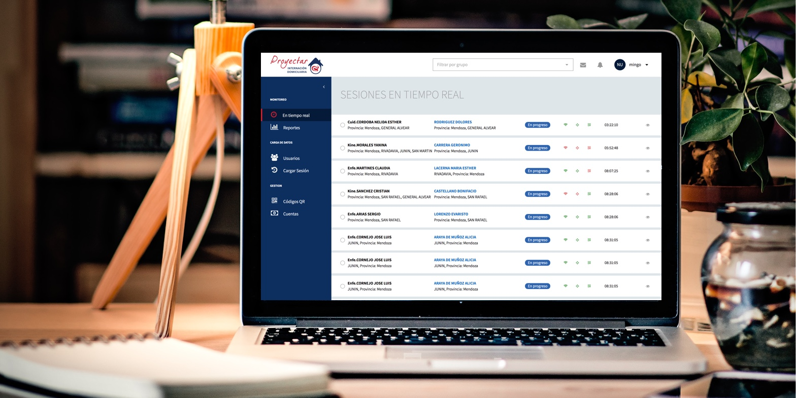

Rav3n
One of the most critical aspects of home care services providers is monitoring and controlling the activity of the medical professionals who are responsible for their patients.

My position
Product Designer
Co-founder
Team
Two Developers
My role
Ideation
Wireframing
Visual Design
Interaction Design
User Research
Year
2017/Present
The context
In August 2017 we were contacted by the CEO of Grupo Proyectar, a home care services business from Argentina, with a very interesting problem at hand. He was in trouble, he had a large group of patients scattered throughout the entire Cordoba province and he had no means for monitoring the activity of their employees remotely and in real-time. Moreover, his business was expanding, he had successfully signed a bunch of contracts in another province, Mendoza, duplicating the number of patients under his charge. He was desperate, on the verge, but luckily for him, he found us.
The problem
Grupo Proyectar needed a cost-efficient and realistic way to answer the following questions: How could they tell if a doctor was actually visiting and checking regularly the patients they have assigned? how could they know, in a timely manner, when something important had happened to a patient? and more importantly, how could they do all of that remotely, in real-time, with all their patients scattered throughout two provinces?
⬆